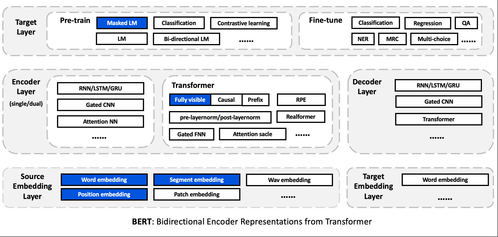
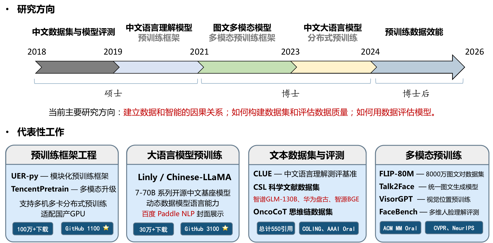
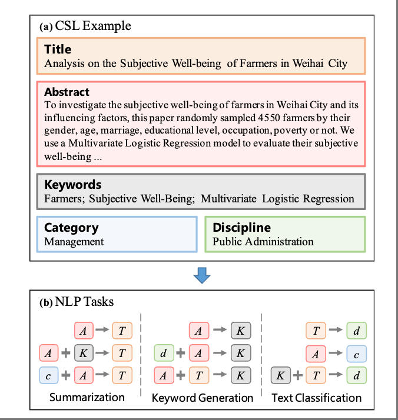
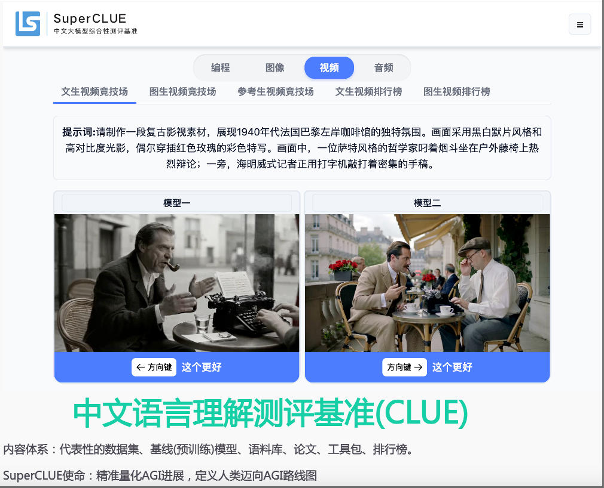
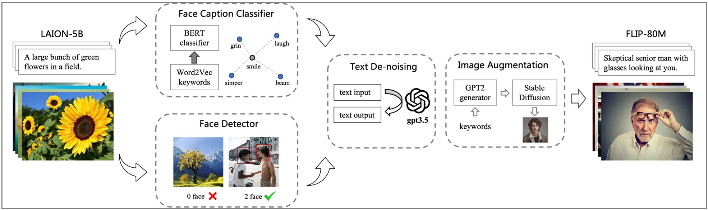
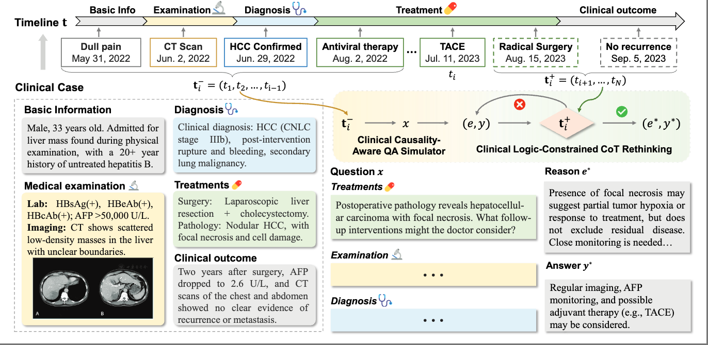
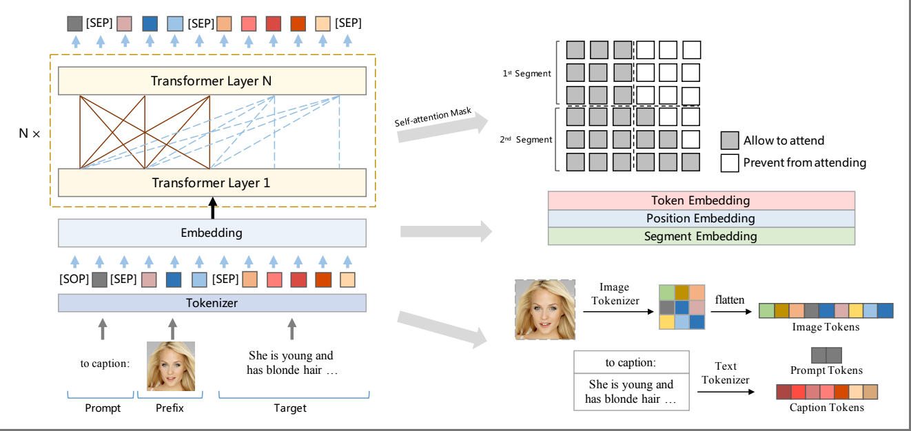
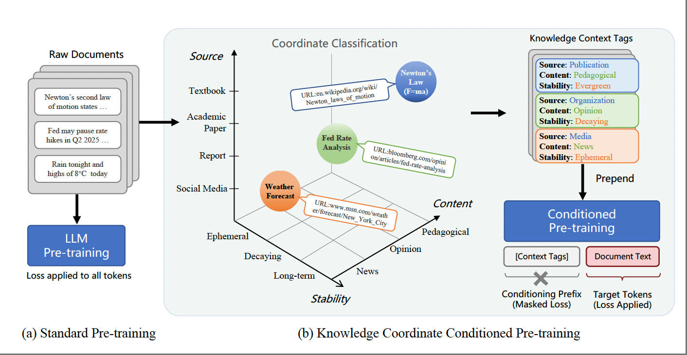

ACL 2023TencentPretrain: A Scalable and Flexible Toolkit for Pre-training Models of Different Modalities
Proceedings of the 61st Annual Meeting of the Association for Computational Linguistics (ACL 2023)
我的研究聚焦于预训练数据工程（Data-centric AI），我也是 UER-py、TencentPretrain、Linly、CLUE Benchmark、CSL 等项目的作者。

完整列表见 Google Scholar。

ACL 2023Proceedings of the 61st Annual Meeting of the Association for Computational Linguistics (ACL 2023)

COLING 2022Proceedings of the 29th International Conference on Computational Linguistics (COLING 2022)

COLING 2020Proceedings of the 28th International Conference on Computational Linguistics (COLING 2020)

Oral ACM MM 2024Proceedings of the 32nd ACM International Conference on Multimedia (ACM MM 2024)
2024 IEEE International Conference on Acoustics, Speech and Signal Processing (ICASSP 2024)

Oral AAAI 2026Proceedings of the AAAI Conference on Artificial Intelligence (AAAI 2026)

ACM MM 2022Proceedings of the 30th ACM International Conference on Multimedia (ACM MM 2022)

ACL 2026The 64th Annual Meeting of the Association for Computational Linguistics (ACL 2026)
国自然青年基金资助项目：知识语境驱动的大模型高数据效能预训练方法